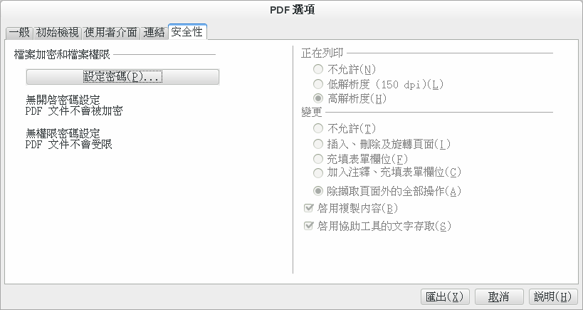

也紀念我們永遠的朋友 李士傑先生（Shih-Chieh Ilya Li）。
用 LibreOffice 匯出 PDF
LibreOffice 是開源世界中相當有名的辦公套件，最近版本號推進速度很快，功能也不斷推陳出新。
不過今天想要和大家分享的，並不是 LibreOffice 本身，而是 LibreOffice 內建的 PDF 匯出功能。
對於有一定經驗的電腦用戶來說，製作 PDF 檔案並不困難，包括 LibreOffice 在內，許多軟體可以只透過一個按鈕就將檔案匯出成 PDF 格式。然而從另一個角度考慮，PDF 本身卻也相當有彈性，匯出時有大把可由使用者自行設定調節的細部選項可用。想來使用 PDF 格式的人很多，但仔細研究過那些選項涵義的人恐怕就沒多少了；即使有心認真起來將它搞懂，也因為缺乏足夠的背景知識，就算看了說明書也滿頭問號，看也看不懂。
LibreOffice 是款普遍又容易使用的軟體，PDF 匯出選項的數量和其他軟體相比也十分適中。本文就以 LibreOffice 的 PDF 匯出功能為基礎，和大家一起檢視這方面的設定。
LibreOffice 最簡單的 PDF 匯出方法，就是按下面板上的 PDF 匯出按鈕。不過如果需要進一步設定 PDF 的匯出細節，則需要從主選單的「檔案」→「匯出成 PDF ...」進入。
我們的旅程就從這裡開始。
第一頁：資料格式基本設定
如前所述地按下按鈕，下方的對話框就會出現。
▲ 圖1：PDF 匯出選項頁－－第一頁。
圖片壓縮
「影像」標籤下的選項，處理的是您文件中的「插圖類」檔案附件，而非您的「整體文件」。簡單說來，不論設定成怎樣的值，都不會讓匯出後的文字變得模糊，僅僅只會影響插圖的清晰度。這方面還請放心。
JPEG 壓縮強度被預設為 90%。這種壓縮的實際效果，和「無損壓縮」選項幾無差異－－至少我不管把圖放多大都無法用目視分出不同來－－但是，匯出後 PDF 檔案體積卻差別巨大，在測試樣本中差了整整六倍。因此推薦使用預設值 (90%) 來進行圖檔壓縮。
此值如果設太低，圖片顏色會嚴重走調。就經驗上來說，建議設值不要走極端，檔案大小與顯示效果就都還可接受，90% ~ 60% 是個人的推薦範圍，請參考。
「降低影像解析度」選項，同樣是透過降低圖片的精美度來壓縮圖片大小，但其壓縮方式卻與前述的 JPEG 壓縮不同。這種壓縮不會損失顏色，但會在將圖片放大時產生小方磚。
如果有印刷需求，此處的數值無論如何不要低於 300dpi；如果匯出的 PDF 只是打算供人放在電腦上觀看，則建議無論如何不要低於 150dpi。
水印設定
「以水印簽署」選項，會在文件的每一頁中，覆蓋上一層半透明，且橫跨全頁的巨大文字。
注意這不是漂漂亮亮的可以用做裝飾的水印字，而是「內部文件，禁止傳閱」、「機密」或「僅供預覽」式的強烈印章式聲明。如果有類似場合可以使用看看。
內嵌編輯能力
「內嵌 OpenDocument 檔案」是一項很有特色的選項，這能讓這份檔案在日後被視為一般的 LibreOffice 檔案供使用者打開編輯。但是相對地檔案大小也會大幅上升。因為這等於是將一份純的 PDF，和一份純的原始檔，兩者合併打包在一起。
如果您沒有對 PDF 進行任何壓縮，勾選這個選項會讓檔案大小憑空增加兩倍左右；如果您有對影像進行壓縮，則檔案大小的增加倍數還會更高。因為內嵌原始檔佔用的空間大小是固定的，不會被壓縮到。
PDF/A-1a
「PDF/A-1a」選項打勾的話，可以將文件儲存成 PDF/A-1a 格式。這是一種特別的 PDF 格式。
PDF/A 系列格式是被設計用來「保存」用的，其設計初衷，是為了讓 PDF 檔案能於遙遠的未來被完整地讀取並顯示出來，而不會因為缺少字型、忘記密碼、用了不同的閱讀設備或軟體而讀到不一樣的東西、格式跑掉，甚至完全讀不出來。您可以將大寫的 A 理解 Archive（封存），另外 PDF 還有 PDF/X （X = eXchange，交換）等適合用來印刷出版的亞種，此處不提。
PDF/A 大類底下又分為 PDF/A-1a 與 PDF/A-1b。PDF/A-1b 是 PDF/A 系列的基本型，能完美地完成 PDF/A 系列的目標：完整重現文件最初的顯示畫面。至於 PDF/A-1a 型，則是在 b 型的基礎上多紀錄了一些額外資料，使某種程度上的排版微調成為可能。這部份請參考下方對於「標記的 PDF」之說明。
如果您希望您的檔案，到哪裡都能保持一樣的外觀而不會出現格式問題，「PDF/A-1a」選項就是一種快速的解決方案。請選取她。
標記的 PDF
「已標記的 PDF」選項，可以幫助 PDF 文件保留既有的結構。
各位或許不知道，PDF 文件和 Word 或 txt 文件不同，它的重點在於版面的呈現方式，而不在於保存「文字流」。說得更具體一點，PDF 檔案中固然會安插有很多文字區塊，但卻沒有紀錄文字區塊之間的語義順序。
舉例來說，假設 PDF 中有兩行文字：
……我的爸爸討厭吃蘋
果。
因為行尾在「蘋果」中間分開，所以使用者在檔案中搜尋「蘋果」這個關鍵字時，會驚訝地發現自己居然找不到。這就是因為 PDF 檔案（預設）並沒有紀錄上述那兩行在文意上是連在一起的，而也因為相同的原因，如果您切換到螢幕寬度更大或更小的平台，希望每行的字數能增加或減少，PDF 也無能為力，因為他不知道文意如何串聯，自然也無法將已經斷開的兩行重新串接起來，重新加以排版。
但是如果您勾選「已標記的 PDF」選項，那上述的問題就都能解決。不過相對的，所需的儲存空間也會因此而增加－－實測結果大致上是文字所佔空間的兩倍左右。
建立 PDF 表單
往下說明「建立 PDF 表單」這個選項前，有必要稍微解釋什麼是 PDF 表單。
簡單地說，PDF 表單是種「可在 PDF 閱讀器中讓讀者直接填表打字」的特別欄位。請注意它跟一般文書編輯時常用的「表格」並不是同一回事。
比方說您的 PDF 可能是一份讀者回函，上面要求讀者填入地址以供抽獎……那問題來了，讀者該怎麼填呢？是印出來之後用手填？還是截圖後再用美工技術拼字拼上去？算了吧，這麼麻煩誰會老實回信呢？這時您就可以在文件中設定一些「表單」，讓讀者可以直接在電腦螢幕上進行輸入，這一來問題就解決大半了。
如果希望在文件中創建 PDF 表單，請從 LibreOffice 的「檢視」→「工具列」→「表單控制項」面板來建立。具體如何建立的細節超出本文範圍，請自行嘗試研究看看。
關於「建立 PDF 表單」這個選項，如果您的文件中沒有任何表單，那本選項就和您沒有任何關係；反之如果您的文件中存在表單，則您在匯出前就得勾選這個選項，才會將表單匯出為真正能用來輸入的欄位，否則就只是外觀上看起來像，但實際上依然無法填入東西。
匯出的表單可以選擇許多格式，而這涉及了很多關於 PDF 版本、功能相容性與應用程式支援度間的微妙差異，我一時也看不出哪種格式比較佔優勢，總之採用預設格式 (FDF) 基本上就可以用了。更多細節與特徵還請各位讀者自行研究了。
匯出書籤
「匯出書籤」選項打勾後，會在 PDF 中加入您所設定的章節索引。
您多半有見過：用 PDF 閱讀軟體打開某份製作精良的 PDF 檔案後，側欄會出現一排目錄，上面寫著第一章、第二章等等；而點擊目錄中的項目，還可以快速跳轉到指定的章節位置……沒錯，本選項要匯出的就是那個了！
想要匯出書籤，除了本選項得勾上以外，您還得具體設定「要將哪些位置設為索引目標」。比方說「要將一級標題列入索引，三級標題太細了不要列入」……之類的。您可以在主選單的「工具」→「章節編號…」處進行這方面的設定調整。
匯出備註、匯出空白頁面、內嵌標準字型
當「匯出備註」打勾時，您先前在本檔案中透過主選單功能表「插入」→「備註」選項插入的備註，就會以 PDF 專有的註解型式被匯出到 PDF 檔案之中。反之如果不勾，則這些備註就會被略過。
本選項預設是不勾（會被略過）的。
「匯出自動插入的空白頁面」選項，特別適用於某些需要雙面列印的文件。在這種情況下，有時有些頁面會依設定自動留白。如：在奇數頁結束一個章節，但又自訂規則要求所有章節必須從奇數頁開頭，那麼到下一個章節中間自然會由程式自行插入一頁空白的偶數頁。
本選項一旦打勾，在 PDF 匯出時就不會略過這一張空白頁，如此一來在雙面列印時才不會出現正反面對不上的問題。
「內嵌標準字型」選項中的「標準字型」，指的是 PDF 規範中預設的 14 種基本字型，就是 Times、Courier、Helvetica、Symbol、Zapf Dingbats 這五種加上他們的粗體斜體等變體。這些字體理論上所有 PDF 閱讀器都會內建，所以沒有必要刻意嵌入。但如果在此打勾，也能強制嵌入這些字體（不過僅限於這份文件中有用到的部份）。
第二頁：第一次打開的瀏覽狀態
▲ 圖2：PDF 匯出選項頁－－第二頁。
第二頁「初始檢視」所設定的，是這份 PDF 第一次被打開時，會以什麼模式被開啟、會翻到哪一頁、版面的配置外觀為何。
這些設定具體如何運作，和個別閱讀器的設定與特性有關，有些閱讀軟體不會理會這些資料，或是會使用預設設定覆蓋。
當然您還是可以設定一下。各選項意義都如字面那般，不細講。
第三頁：使用者介面
▲ 圖3：PDF 匯出選項頁－－第三頁。
本頁設定每次打開時使用者介面的狀況。
和第二頁相同，各家閱讀器對此支援狀況落差很大。比方說 Evince 就不支援除了以全螢幕模式開啟以外的大多數選項。而且如果設定不當，可能會讓讀者感到困擾，好比說如果勾選了「隱藏視窗控制項」或「以全螢幕模式開啟」，就很有可能嚇到讀者。
個人建議除非真有必要，建議不要動這一頁的選項內容。
此外還有些需要額外說明的是「使用切換效果」選項。這選項專門用在將 LibreOffice 的 Impress 投影片匯出為成 PDF 投影片時。它會將 Impress 中設定的換頁效果，也一併存入 PDF 中。只要您的 PDF 閱讀器支援簡報模式，就會在進入簡報模式後發揮效果。
另外一個要提的是本頁的「書籤」選項。
本頁的書籤和第一頁的書籤一樣，都是指索引的意思，不過此處設定的不再是書籤本身，而是「書籤的展開層級」。具體說來，如果設為「全部書籤等級」，表示樹狀索引會在開啟檔案時自動全部展開。反過來說，如果將「顯示書籤等級」設為 1，則預設只會曝露出第一級索引，其他的索引都會被隱藏起來（但可以像開啟樹狀圖一樣被讀者手動打開）。
如果書籤數量太多，擔心讀者打開檔案後眼花頭暈的話，可以嘗試調整這裡的數字。
第四頁：連結設定
本頁設定轉換為 PDF 時，文章中現有連結的處理方法。

▲ 圖4：PDF 匯出選項頁－－第四頁。
「轉換 PDF 目標的文件參照」選項，可以將所有連向標準 LibreOffice 文件的連結－－如 *.odt、*.ods－－其副檔名改成 pdf。適用於將一堆交互連結的 odf 文件同時大量匯出成 PDF 檔案時。
「跨文件連結」選項，可用來指定閱讀這份 PDF 的 PDF 瀏覽器，其打開外部連結的方式。您在製作 PDF 時，就可以指定讀者是用網頁瀏覽器或直接用當前的 PDF 閱讀器打開外部聯結。當然這也和閱讀器的相容性有關，只能參考而不能依賴。
另外其他兩個選項我暫時試不出效果，說明文件也無論如何看不懂，因此先跳過。歡迎對此有瞭解的讀者留言補充。
第五頁：保密設定

▲ 圖5：PDF 匯出選項頁－－第五頁。
按下設定密碼後會出現一個密碼設定視窗。如下：
▲ 圖6：密碼設定視窗
密碼設定視窗中可以設定兩組密碼。上面的密碼是用來限制讀者「能不能開啟閱讀這個 PDF 檔案」用的，PDF 規範稱此密碼為 User Password，沒有得到此一密碼的人將無法開啟這個 PDF 檔案。至於下方的密碼，則是用來限制 圖 5 中右側那些設定之用（PDF 規範稱此為 Owner Password），沒有密碼將無法解除那些限制性設定。
如果密碼欄位是空的，那就是不加密的意思。您可以用這種方式來解除密碼設定。
此外，也請注意以上兩個密碼的實作差別。
讀取用密碼 (User Password) 有「真正去用密碼加密 PDF 檔案」的特性，換言之，沒有密碼就一定打不開，不管讀者用哪一款 PDF 閱讀器都一樣（當然您的密碼要夠難猜）。但反過來說，Owner Password 就沒有真正用加密方式來防護檔案資料，只是簡單地對閱讀器進行一個「我打算限制讀者不准做這個那個……」的「宣告」，而並非真的有實力去阻止閱讀器進行列印、編輯、複製貼上等動作。事實上許多非 Adobe 官方的 PDF 閱讀器都不甩這個設定。因此請不要真正去依賴這個功能。
LibreOffice 的匯出說明到此說明完畢。雖然還是有些不夠完整的地方，但讀過上文，大家對於 PDF 的理解，多少還是有增加一些吧？
請在日後更準確地使用 PDF 匯出功能哦！
Special


Address：No.128, Sec.2, Academia Rd., Institute of Information Science, Academia Sinica, Nangang District, Taipei City 11529, Taiwan (R.O.C).
Privacy Policy. Terms-of-use

Comments
（Libreoffice 目前出到 4.0，但我還沒試過這一版，您有興 趣的話可以試試看）
請問您一個匯出PDF的問題，狀 況如下：
目前使用LibreOffice 3.5，在點選匯出成PDF功能時， 整個LibreOffice就不 見了，也沒有匯出任何pdf檔案 ，再重複點選該doc檔案後，L ibreOffice跳出一個回 復視窗，要求啟動回復程序，回復 後該doc檔案才又顯示出來了。